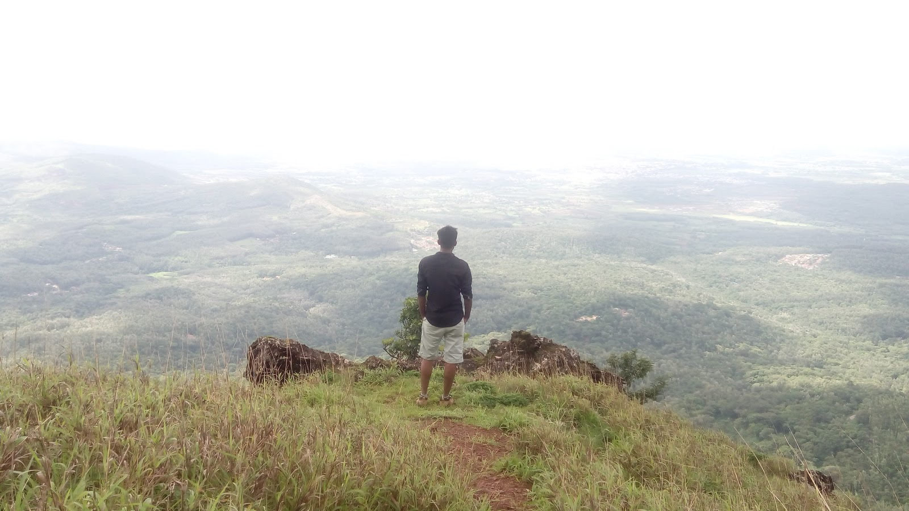
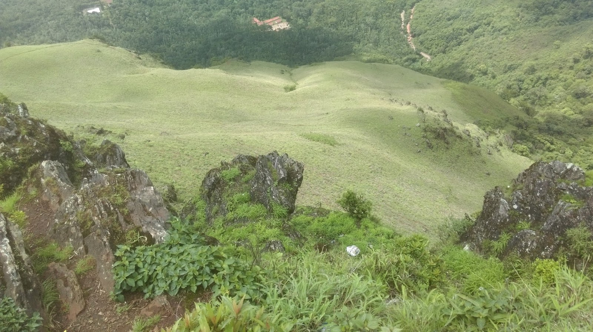

Chikmagalur, Karnataka - The Mullayanagiri Trek
IT IS BETTER TO TRAVEL WELL THAN TO ARRIVE. ~ BUDDHA
One fine weekend me and my friends from Bangalore planned to visit the famous Chikmagalur district. So I called them up on a Friday night and took a government bus on a Saturday morning. It was 4-5 hours journey from Bangalore. We all just had a bagpack with only clothes and essentials.
We took a lodge instead of getting into any fancy hotel. After keeping our bags we went to get a bike, which was arranged for us by my friend Arpit's colleague at work.

A cliff on the way to Mulyangiri
So we got just one bike and we were three people. Chikmangalur being a small town we planned to do tripling. After satisfying our tummies, we went for local sightseeing. Till now the trip was amazing seeing the beautiful villages around Karanataka, the weather was pleasant. We went to see a Dam and then lakes. The next day morning we had planned to visit the Mulyangiri trek. Since the region was under control of forest department, we were not able to get through bike so we parked our bike and trekked.

View from Mulyangiri Trek
The trek was super amazing. Moving through the jungle and steep cliffs sometimes. It took us like less than 2 hours to reach the top and that was breathtaking. The cloud moving fast and low, flowing through us. At top there was temple so we visited there, took some rest and then started to descend back. Since we were on foot, we took lift by a lorry and came back to the town. After that the weekend was again over and we left for Bangalore yet again.